A proposta é integrar as ações realizadas dentro do ambiente educacional, que
contribuirão para o desenvolvimento de soluções inovadoras para o comércio da
cidade, além de criar um ambiente que desenvolva o empreendedorismo dos alunos.
Estes são os objetivos para os quais as Nações Unidas estão
contribuindo a fim de que possamos atingir a Agenda até 2030.
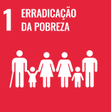
Objetivo 1.
Acabar com a pobreza em todas as suas formas, em todos os lugares
1.1 Até 2030, erradicar a pobreza extrema para todas as pessoas em todos os lugares, atualmente
medida como pessoas vivendo com menos de US$ 1,90 por dia
1.2 Até 2030, reduzir pelo menos à metade a proporção de homens, mulheres e crianças, de todas as
idades, que vivem na pobreza, em todas as suas dimensões, de acordo com as definições nacionais.
1.3 Implementar, em nível nacional, medidas e sistemas de proteção social adequados, para todos,
incluindo pisos, e até 2030 atingir a cobertura substancial dos pobres e vulneráveis.
1.4 Até 2030, garantir que todos os homens e mulheres, particularmente os pobres e vulneráveis,
tenham direitos iguais aos recursos econômicos, bem como o acesso a serviços básicos, propriedade
e controle sobre a terra e outras formas de propriedade, herança, recursos naturais, novas
tecnologias apropriadas e serviços financeiros, incluindo microfinanças.
1.5 Até 2030, construir a resiliência dos pobres e daqueles em situação de vulnerabilidade, e
reduzir a exposição e vulnerabilidade destes a eventos extremos relacionados com o clima e outros
choques e desastres econômicos, sociais e ambientais.
1.a Garantir uma mobilização significativa de recursos a partir de uma variedade de fontes,
inclusive por meio do reforço da cooperação para o desenvolvimento, para proporcionar meios
adequados e previsíveis para que os países em desenvolvimento, em particular os países menos
desenvolvidos, implementem programas e políticas para acabar com a pobreza em todas as suas
dimensões.
1.b Criar marcos políticos sólidos em níveis nacional, regional e internacional, com base em
estratégias de desenvolvimento a favor dos pobres e sensíveis a gênero, para apoiar investimentos
acelerados nas ações de erradicação da pobreza.
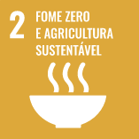
Objetivo 2.
Acabar com a fome, alcançar a segurança alimentar e melhoria da nutrição e promover a agricultura
sustentável
2.1 Até 2030, acabar com a fome e garantir o acesso de todas as pessoas, em particular os pobres e
pessoas em situações vulneráveis, incluindo crianças, a alimentos seguros, nutritivos e
suficientes durante todo o ano.
2.2 Até 2030, acabar com todas as formas de desnutrição, incluindo atingir, até 2025, as metas
acordadas internacionalmente sobre nanismo e caquexia em crianças menores de cinco anos de idade,
e atender às necessidades nutricionais dos adolescentes, mulheres grávidas e lactantes e pessoas
idosas.
2.3 Até 2030, dobrar a produtividade agrícola e a renda dos pequenos produtores de alimentos,
particularmente das mulheres, povos indígenas, agricultores familiares, pastores e pescadores,
inclusive por meio de acesso seguro e igual à terra, outros recursos produtivos e insumos,
conhecimento, serviços financeiros, mercados e oportunidades de agregação de valor e de emprego
não agrícola.
2.4 Até 2030, garantir sistemas sustentáveis de produção de alimentos e implementar práticas
agrícolas resilientes, que aumentem a produtividade e a produção, que ajudem a manter os
ecossistemas, que fortaleçam a capacidade de adaptação às mudanças climáticas, às condições
meteorológicas extremas, secas, inundações e outros desastres, e que melhorem progressivamente a
qualidade da terra e do solo.
2.5 Até 2020, manter a diversidade genética de sementes, plantas cultivadas, animais de criação e
domesticados e suas respectivas espécies selvagens, inclusive por meio de bancos de sementes e
plantas diversificados e bem geridos em nível nacional, regional e internacional, e garantir o
acesso e a repartição justa e equitativa dos benefícios decorrentes da utilização dos recursos
genéticos e conhecimentos tradicionais associados, como acordado internacionalmente.
2.a Aumentar o investimento, inclusive via o reforço da cooperação internacional, em
infraestrutura rural, pesquisa e extensão de serviços agrícolas, desenvolvimento de tecnologia, e
os bancos de genes de plantas e animais, para aumentar a capacidade de produção agrícola nos
países em desenvolvimento, em particular nos países menos desenvolvidos.
2.b Corrigir e prevenir as restrições ao comércio e distorções nos mercados agrícolas mundiais,
incluindo a eliminação paralela de todas as formas de subsídios à exportação e todas as medidas de
exportação com efeito equivalente, de acordo com o mandato da Rodada de Desenvolvimento de Doha.
2.c Adotar medidas para garantir o funcionamento adequado dos mercados de commodities de alimentos
e seus derivados, e facilitar o acesso oportuno à informação de mercado, inclusive sobre as
reservas de alimentos, a fim de ajudar a limitar a volatilidade extrema dos preços dos
alimentos.
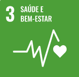
Objetivo 3.
Assegurar uma vida saudável e promover o bem-estar para todas e todos, em todas as idades
3.1 Até 2030, reduzir a taxa de mortalidade materna global para menos de 70 mortes por 100.000
nascidos vivos.
3.2 Até 2030, acabar com as mortes evitáveis de recém-nascidos e crianças menores de 5 anos, com
todos os países objetivando reduzir a mortalidade neonatal para pelo menos 12 por 1.000 nascidos
vivos e a mortalidade de crianças menores de 5 anos para pelo menos 25 por 1.000 nascidos vivos
3.3 Até 2030, acabar com as epidemias de AIDS, tuberculose, malária e doenças tropicais
negligenciadas, e combater a hepatite, doenças transmitidas pela água, e outras doenças
transmissíveis
3.4 Até 2030, reduzir em um terço a mortalidade prematura por doenças não transmissíveis via
prevenção e tratamento, e promover a saúde mental e o bem-estar
3.5 Reforçar a prevenção e o tratamento do abuso de substâncias, incluindo o abuso de drogas
entorpecentes e uso nocivo do álcool
3.6 Até 2020, reduzir pela metade as mortes e os ferimentos globais por acidentes em estradas
3.7 Até 2030, assegurar o acesso universal aos serviços de saúde sexual e reprodutiva, incluindo o
planejamento familiar, informação e educação, bem como a integração da saúde reprodutiva em
estratégias e programas nacionais
3.8 Atingir a cobertura universal de saúde, incluindo a proteção do risco financeiro, o acesso a
serviços de saúde essenciais de qualidade e o acesso a medicamentos e vacinas essenciais seguros,
eficazes, de qualidade e a preços acessíveis para todos
3.9 Até 2030, reduzir substancialmente o número de mortes e doenças por produtos químicos
perigosos, contaminação e poluição do ar e água do solo
3.a Fortalecer a implementação da Convenção-Quadro para o Controle do Tabaco em todos os países,
conforme apropriado
3.b Apoiar a pesquisa e o desenvolvimento de vacinas e medicamentos para as doenças transmissíveis
e não transmissíveis, que afetam principalmente os países em desenvolvimento, proporcionar o
acesso a medicamentos e vacinas essenciais a preços acessíveis, de acordo com a Declaração de
Doha, que afirma o direito dos países em desenvolvimento de utilizarem plenamente as disposições
do acordo TRIPS sobre flexibilidades para proteger a saúde pública e, em particular, proporcionar
o acesso a medicamentos para todos
3.c Aumentar substancialmente o financiamento da saúde e o recrutamento, desenvolvimento e
formação, e retenção do pessoal de saúde nos países em desenvolvimento, especialmente nos países
menos desenvolvidos e nos pequenos Estados insulares em desenvolvimento
3.d Reforçar a capacidade de todos os países, particularmente os países em desenvolvimento, para o
alerta precoce, redução de riscos e gerenciamento de riscos nacionais e globais de saúde.
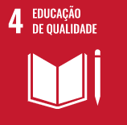
Objetivo 4.
Assegurar a educação inclusiva e equitativa e de qualidade, e promover oportunidades de
aprendizagem ao longo da vida para todas e todos
4.1 Até 2030, garantir que todas as meninas e meninos completem o ensino primário e secundário
livre, equitativo e de qualidade, que conduza a resultados de aprendizagem relevantes e eficazes
4.2 Até 2030, garantir que todos as meninas e meninos tenham acesso a um desenvolvimento de
qualidade na primeira infância, cuidados e educação pré-escolar, de modo que eles estejam prontos
para o ensino primário
4.3 Até 2030, assegurar a igualdade de acesso para todos os homens e mulheres à educação técnica,
profissional e superior de qualidade, a preços acessíveis, incluindo universidade
4.4 Até 2030, aumentar substancialmente o número de jovens e adultos que tenham habilidades
relevantes, inclusive competências técnicas e profissionais, para emprego, trabalho decente e
empreendedorismo
4.5 Até 2030, eliminar as disparidades de gênero na educação e garantir a igualdade de acesso a
todos os níveis de educação e formação profissional para os mais vulneráveis, incluindo as pessoas
com deficiência, povos indígenas e as crianças em situação de vulnerabilidade
4.6 Até 2030, garantir que todos os jovens e uma substancial proporção dos adultos, homens e
mulheres estejam alfabetizados e tenham adquirido o conhecimento básico de matemática
4.7 Até 2030, garantir que todos os alunos adquiram conhecimentos e habilidades necessárias para
promover o desenvolvimento sustentável, inclusive, entre outros, por meio da educação para o
desenvolvimento sustentável e estilos de vida sustentáveis, direitos humanos, igualdade de gênero,
promoção de uma cultura de paz e não violência, cidadania global e valorização da diversidade
cultural e da contribuição da cultura para o desenvolvimento sustentável
4.a Construir e melhorar instalações físicas para educação, apropriadas para crianças e sensíveis
às deficiências e ao gênero, e que proporcionem ambientes de aprendizagem seguros e não violentos,
inclusivos e eficazes para todos
4.b Até 2020, substancialmente ampliar globalmente o número de bolsas de estudo para os países em
desenvolvimento, em particular os países menos desenvolvidos, pequenos Estados insulares em
desenvolvimento e os países africanos, para o ensino superior, incluindo programas de formação
profissional, de tecnologia da informação e da comunicação, técnicos, de engenharia e programas
científicos em países desenvolvidos e outros países em desenvolvimento
4.c Até 2030, substancialmente aumentar o contingente de professores qualificados, inclusive por
meio da cooperação internacional para a formação de professores, nos países em desenvolvimento,
especialmente os países menos desenvolvidos e pequenos Estados insulares em desenvolvimento.

Objetivo 5.
Alcançar a igualdade de gênero e empoderar todas as mulheres e meninas
5.1 Acabar com todas as formas de discriminação contra todas as mulheres e meninas em toda parte
5.2 Eliminar todas as formas de violência contra todas as mulheres e meninas nas esferas públicas
e privadas, incluindo o tráfico e exploração sexual e de outros tipos
5.3 Eliminar todas as práticas nocivas, como os casamentos prematuros, forçados e de crianças e
mutilações genitais femininas
5.4 Reconhecer e valorizar o trabalho de assistência e doméstico não remunerado, por meio da
disponibilização de serviços públicos, infraestrutura e políticas de proteção social, bem como a
promoção da responsabilidade compartilhada dentro do lar e da família, conforme os contextos
nacionais
5.5 Garantir a participação plena e efetiva das mulheres e a igualdade de oportunidades para a
liderança em todos os níveis de tomada de decisão na vida política, econômica e pública
5.6 Assegurar o acesso universal à saúde sexual e reprodutiva e os direitos reprodutivos, como
acordado em conformidade com o Programa de Ação da Conferência Internacional sobre População e
Desenvolvimento e com a Plataforma de Ação de Pequim e os documentos resultantes de suas
conferências de revisão
5.a Realizar reformas para dar às mulheres direitos iguais aos recursos econômicos, bem como o
acesso a propriedade e controle sobre a terra e outras formas de propriedade, serviços
financeiros, herança e os recursos naturais, de acordo com as leis nacionais
5.b Aumentar o uso de tecnologias de base, em particular as tecnologias de informação e
comunicação, para promover o empoderamento das mulheres
5.c Adotar e fortalecer políticas sólidas e legislação aplicável para a promoção da igualdade de
gênero e o empoderamento de todas as mulheres e meninas em todos os níveis.
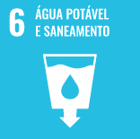
Objetivo 6.
Assegurar a disponibilidade e gestão sustentável da água e saneamento para todas e todos
6.1 Até 2030, alcançar o acesso universal e equitativo a água potável e segura para todos
6.2 Até 2030, alcançar o acesso a saneamento e higiene adequados e equitativos para todos, e
acabar com a defecação a céu aberto, com especial atenção para as necessidades das mulheres e
meninas e daqueles em situação de vulnerabilidade
6.3 Até 2030, melhorar a qualidade da água, reduzindo a poluição, eliminando despejo e minimizando
a liberação de produtos químicos e materiais perigosos, reduzindo à metade a proporção de águas
residuais não tratadas e aumentando substancialmente a reciclagem e reutilização segura
globalmente
6.4 Até 2030, aumentar substancialmente a eficiência do uso da água em todos os setores e
assegurar retiradas sustentáveis e o abastecimento de água doce para enfrentar a escassez de água,
e reduzir substancialmente o número de pessoas que sofrem com a escassez de água
6.5 Até 2030, implementar a gestão integrada dos recursos hídricos em todos os níveis, inclusive
via cooperação transfronteiriça, conforme apropriado
6.6 Até 2020, proteger e restaurar ecossistemas relacionados com a água, incluindo montanhas,
florestas, zonas úmidas, rios, aquíferos e lagos
6.a Até 2030, ampliar a cooperação internacional e o apoio à capacitação para os países em
desenvolvimento em atividades e programas relacionados à água e saneamento, incluindo a coleta de
água, a dessalinização, a eficiência no uso da água, o tratamento de efluentes, a reciclagem e as
tecnologias de reuso
6.b Apoiar e fortalecer a participação das comunidades locais, para melhorar a gestão da água e do
saneamento.
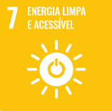
Objetivo 7.
Assegurar o acesso confiável, sustentável, moderno e a preço acessível à energia para todas e
todos
7.1 Até 2030, assegurar o acesso universal, confiável, moderno e a preços acessíveis a serviços de
energia
7.2 Até 2030, aumentar substancialmente a participação de energias renováveis na matriz energética
global
7.3 Até 2030, dobrar a taxa global de melhoria da eficiência energética
7.a Até 2030, reforçar a cooperação internacional para facilitar o acesso a pesquisa e tecnologias
de energia limpa, incluindo energias renováveis, eficiência energética e tecnologias de combustíveis
fósseis avançadas e mais limpas, e promover o investimento em infraestrutura de energia e em
tecnologias de energia limpa
7.b Até 2030, expandir a infraestrutura e modernizar a tecnologia para o fornecimento de serviços de
energia modernos e sustentáveis para todos nos países em desenvolvimento, particularmente nos países
menos desenvolvidos, nos pequenos Estados insulares em desenvolvimento e nos países em
desenvolvimento sem litoral, de acordo com seus respectivos programas de apoio
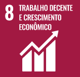
Objetivo 8.
Promover o crescimento econômico sustentado, inclusivo e sustentável, emprego pleno e produtivo e
trabalho decente para todas e todos
8.1 Sustentar o crescimento econômico per capita de acordo com as circunstâncias nacionais e, em
particular, um crescimento anual de pelo menos 7% do produto interno bruto [PIB] nos países menos
desenvolvidos
8.2 Atingir níveis mais elevados de produtividade das economias por meio da diversificação,
modernização tecnológica e inovação, inclusive por meio de um foco em setores de alto valor agregado
e dos setores intensivos em mão de obra
8.3 Promover políticas orientadas para o desenvolvimento que apoiem as atividades produtivas,
geração de emprego decente, empreendedorismo, criatividade e inovação, e incentivar a formalização e
o crescimento das micro, pequenas e médias empresas, inclusive por meio do acesso a serviços
financeiros
8.4 Melhorar progressivamente, até 2030, a eficiência dos recursos globais no consumo e na produção,
e empenhar-se para dissociar o crescimento econômico da degradação ambiental, de acordo com o Plano
Decenal de Programas sobre Produção e Consumo Sustentáveis, com os países desenvolvidos assumindo a
liderança
8.5 Até 2030, alcançar o emprego pleno e produtivo e trabalho decente para todas as mulheres e
homens, inclusive para os jovens e as pessoas com deficiência, e remuneração igual para trabalho de
igual valor
8.6 Até 2020, reduzir substancialmente a proporção de jovens sem emprego, educação ou formação
8.7 Tomar medidas imediatas e eficazes para erradicar o trabalho forçado, acabar com a escravidão
moderna e o tráfico de pessoas, e assegurar a proibição e eliminação das piores formas de trabalho
infantil, incluindo recrutamento e utilização de crianças-soldado, e até 2025 acabar com o trabalho
infantil em todas as suas formas
8.8 Proteger os direitos trabalhistas e promover ambientes de trabalho seguros e protegidos para
todos os trabalhadores, incluindo os trabalhadores migrantes, em particular as mulheres migrantes, e
pessoas em empregos precários
8.9 Até 2030, elaborar e implementar políticas para promover o turismo sustentável, que gera
empregos e promove a cultura e os produtos locais
8.10 Fortalecer a capacidade das instituições financeiras nacionais para incentivar a expansão do
acesso aos serviços bancários, de seguros e financeiros para todos
8.a Aumentar o apoio da Iniciativa de Ajuda para o Comércio [Aid for Trade] para os países em
desenvolvimento, particularmente os países menos desenvolvidos, inclusive por meio do Quadro
Integrado Reforçado para a Assistência Técnica Relacionada com o Comércio para os países menos
desenvolvidos
8.b Até 2020, desenvolver e operacionalizar uma estratégia global para o emprego dos jovens e
implementar o Pacto Mundial para o Emprego da Organização Internacional do Trabalho [OIT].
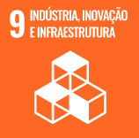
Objetivo 9.
Construir infraestruturas resilientes, promover a industrialização inclusiva e sustentável e
fomentar a inovação
9.1 Desenvolver infraestrutura de qualidade, confiável, sustentável e resiliente, incluindo
infraestrutura regional e transfronteiriça, para apoiar o desenvolvimento econômico e o bem-estar
humano, com foco no acesso equitativo e a preços acessíveis para todos
9.2 Promover a industrialização inclusiva e sustentável e, até 2030, aumentar significativamente a
participação da indústria no setor de emprego e no PIB, de acordo com as circunstâncias nacionais, e
dobrar sua participação nos países menos desenvolvidos
9.3 Aumentar o acesso das pequenas indústrias e outras empresas, particularmente em países em
desenvolvimento, aos serviços financeiros, incluindo crédito acessível e sua integração em cadeias
de valor e mercados
9.4 Até 2030, modernizar a infraestrutura e reabilitar as indústrias para torná-las sustentáveis,
com eficiência aumentada no uso de recursos e maior adoção de tecnologias e processos industriais
limpos e ambientalmente corretos; com todos os países atuando de acordo com suas respectivas
capacidades
9.5 Fortalecer a pesquisa científica, melhorar as capacidades tecnológicas de setores industriais em
todos os países, particularmente os países em desenvolvimento, inclusive, até 2030, incentivando a
inovação e aumentando substancialmente o número de trabalhadores de pesquisa e desenvolvimento por
milhão de pessoas e os gastos público e privado em pesquisa e desenvolvimento
9.a Facilitar o desenvolvimento de infraestrutura sustentável e resiliente em países em
desenvolvimento, por meio de maior apoio financeiro, tecnológico e técnico aos países africanos, aos
países menos desenvolvidos, aos países em desenvolvimento sem litoral e aos pequenos Estados
insulares em desenvolvimento
9.b Apoiar o desenvolvimento tecnológico, a pesquisa e a inovação nacionais nos países em
desenvolvimento, inclusive garantindo um ambiente político propício para, entre outras coisas, a
diversificação industrial e a agregação de valor às commodities
9.c Aumentar significativamente o acesso às tecnologias de informação e comunicação e se empenhar
para oferecer acesso universal e a preços acessíveis à internet nos países menos desenvolvidos, até
2020.
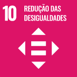
Objetivo 10.
Reduzir a desigualdade dentro dos países e entre eles
10.1 Até 2030, progressivamente alcançar e sustentar o crescimento da renda dos 40% da população
mais pobre a uma taxa maior que a média nacional
10.2 Até 2030, empoderar e promover a inclusão social, econômica e política de todos,
independentemente da idade, gênero, deficiência, raça, etnia, origem, religião, condição econômica
ou outra
10.3 Garantir a igualdade de oportunidades e reduzir as desigualdades de resultados, inclusive por
meio da eliminação de leis, políticas e práticas discriminatórias e da promoção de legislação,
políticas e ações adequadas a este respeito
10.4 Adotar políticas, especialmente fiscal, salarial e de proteção social, e alcançar
progressivamente uma maior igualdade
10.5 Melhorar a regulamentação e monitoramento dos mercados e instituições financeiras globais e
fortalecer a implementação de tais regulamentações
10.6 Assegurar uma representação e voz mais forte dos países em desenvolvimento em tomadas de
decisão nas instituições econômicas e financeiras internacionais globais, a fim de produzir
instituições mais eficazes, críveis, responsáveis e legítimas
10.7 Facilitar a migração e a mobilidade ordenada, segura, regular e responsável das pessoas,
inclusive por meio da implementação de políticas de migração planejadas e bem geridas
10.a Implementar o princípio do tratamento especial e diferenciado para países em desenvolvimento,
em particular os países menos desenvolvidos, em conformidade com os acordos da OMC
10.b Incentivar a assistência oficial ao desenvolvimento e fluxos financeiros, incluindo o
investimento externo direto, para os Estados onde a necessidade é maior, em particular os países
menos desenvolvidos, os países africanos, os pequenos Estados insulares em desenvolvimento e os
países em desenvolvimento sem litoral, de acordo com seus planos e programas nacionais
10.c Até 2030, reduzir para menos de 3% os custos de transação de remessas dos migrantes e eliminar
os corredores de remessas com custos superiores a 5%l e a preços acessíveis à internet nos países
menos desenvolvidos, até 2020.
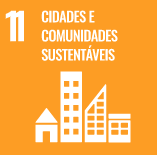
Objetivo 11.
Tornar as cidades e os assentamentos humanos inclusivos, seguros, resilientes e sustentáveis
11.1 Até 2030, garantir o acesso de todos à habitação segura, adequada e a preço acessível, e aos
serviços básicos e urbanizar as favelas
11.2 Até 2030, proporcionar o acesso a sistemas de transporte seguros, acessíveis, sustentáveis e a
preço acessível para todos, melhorando a segurança rodoviária por meio da expansão dos transportes
públicos, com especial atenção para as necessidades das pessoas em situação de vulnerabilidade,
mulheres, crianças, pessoas com deficiência e idosos
11.3 Até 2030, aumentar a urbanização inclusiva e sustentável, e as capacidades para o planejamento
e gestão de assentamentos humanos participativos, integrados e sustentáveis, em todos os países
11.4 Fortalecer esforços para proteger e salvaguardar o patrimônio cultural e natural do mundo
11.5 Até 2030, reduzir significativamente o número de mortes e o número de pessoas afetadas por
catástrofes e substancialmente diminuir as perdas econômicas diretas causadas por elas em relação ao
produto interno bruto global, incluindo os desastres relacionados à água, com o foco em proteger os
pobres e as pessoas em situação de vulnerabilidade
11.6 Até 2030, reduzir o impacto ambiental negativo per capita das cidades, inclusive prestando
especial atenção à qualidade do ar, gestão de resíduos municipais e outros
11.7 Até 2030, proporcionar o acesso universal a espaços públicos seguros, inclusivos, acessíveis e
verdes, particularmente para as mulheres e crianças, pessoas idosas e pessoas com deficiência
11.a Apoiar relações econômicas, sociais e ambientais positivas entre áreas urbanas, periurbanas e
rurais, reforçando o planejamento nacional e regional de desenvolvimento
11.b Até 2020, aumentar substancialmente o número de cidades e assentamentos humanos adotando e
implementando políticas e planos integrados para a inclusão, a eficiência dos recursos, mitigação e
adaptação às mudanças climáticas, a resiliência a desastres; e desenvolver e implementar, de acordo
com o Marco de Sendai para a Redução do Risco de Desastres 2015-2030, o gerenciamento holístico do
risco de desastres em todos os níveis
11.c Apoiar os países menos desenvolvidos, inclusive por meio de assistência técnica e financeira,
para construções sustentáveis e resilientes, utilizando materiais locais.
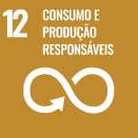
Objetivo 12.
Assegurar padrões de produção e de consumo sustentáveis
12.1 Implementar o Plano Decenal de Programas sobre Produção e Consumo Sustentáveis, com todos os
países tomando medidas, e os países desenvolvidos assumindo a liderança, tendo em conta o
desenvolvimento e as capacidades dos países em desenvolvimento
12.2 Até 2030, alcançar a gestão sustentável e o uso eficiente dos recursos naturais
12.3 Até 2030, reduzir pela metade o desperdício de alimentos per capita mundial, nos níveis de
varejo e do consumidor, e reduzir as perdas de alimentos ao longo das cadeias de produção e
abastecimento, incluindo as perdas pós-colheita
12.4 Até 2020, alcançar o manejo ambientalmente saudável dos produtos químicos e todos os resíduos,
ao longo de todo o ciclo de vida destes, de acordo com os marcos internacionais acordados, e reduzir
significativamente a liberação destes para o ar, água e solo, para minimizar seus impactos negativos
sobre a saúde humana e o meio ambiente
12.5 Até 2030, reduzir substancialmente a geração de resíduos por meio da prevenção, redução,
reciclagem e reuso
12.6 Incentivar as empresas, especialmente as empresas grandes e transnacionais, a adotar práticas
sustentáveis e a integrar informações de sustentabilidade em seu ciclo de relatórios
12.7 Promover práticas de compras públicas sustentáveis, de acordo com as políticas e prioridades
nacionais
12.8 Até 2030, garantir que as pessoas, em todos os lugares, tenham informação relevante e
conscientização para o desenvolvimento sustentável e estilos de vida em harmonia com a natureza
12.a Apoiar países em desenvolvimento a fortalecer suas capacidades científicas e tecnológicas para
mudar para padrões mais sustentáveis de produção e consumo
12.b Desenvolver e implementar ferramentas para monitorar os impactos do desenvolvimento sustentável
para o turismo sustentável, que gera empregos, promove a cultura e os produtos locais
12.c Racionalizar subsídios ineficientes aos combustíveis fósseis, que encorajam o consumo
exagerado, eliminando as distorções de mercado, de acordo com as circunstâncias nacionais,
inclusive por meio da reestruturação fiscal e a eliminação gradual desses subsídios prejudiciais,
caso existam, para refletir os seus impactos ambientais, tendo plenamente em conta as necessidades
específicas e condições dos países em desenvolvimento e minimizando os possíveis impactos adversos
sobre o seu desenvolvimento de uma forma que proteja os pobres e as comunidades afetadas.
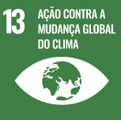
Objetivo 13.
Tomar medidas urgentes para combater a mudança climática e seus impactos
13.1 Reforçar a resiliência e a capacidade de adaptação a riscos relacionados ao clima e às
catástrofes naturais em todos os países
13.2 Integrar medidas da mudança do clima nas políticas, estratégias e planejamentos nacionais
13.3 Melhorar a educação, aumentar a conscientização e a capacidade humana e institucional sobre
mitigação, adaptação, redução de impacto e alerta precoce da mudança do clima
13.a Implementar o compromisso assumido pelos países desenvolvidos partes da Convenção Quadro das
Nações Unidas sobre Mudança do Clima [UNFCCC] para a meta de mobilizar conjuntamente US$ 100 bilhões
por ano a partir de 2020, de todas as fontes, para atender às necessidades dos países em
desenvolvimento, no contexto das ações de mitigação significativas e transparência na implementação;
e operacionalizar plenamente o Fundo Verde para o Clima por meio de sua capitalização o mais cedo
possível
13.b Promover mecanismos para a criação de capacidades para o planejamento relacionado à mudança do
clima e à gestão eficaz, nos países menos desenvolvidos, inclusive com foco em mulheres, jovens,
comunidades locais e marginalizadas
(*) Reconhecendo que a Convenção Quadro das Nações Unidas sobre Mudança do Clima [UNFCCC] é o fórum
internacional intergovernamental primário para negociar a resposta global à mudança do clima.

Objetivo 14.
Conservação e uso sustentável dos oceanos, dos mares e dos recursos marinhos
para o desenvolvimento sustentável
14.1 Até 2025, prevenir e reduzir significativamente a poluição marinha de todos os tipos,
especialmente a advinda de atividades terrestres, incluindo detritos marinhos e a poluição por
nutrientes
14.2 Até 2020, gerir de forma sustentável e proteger os ecossistemas marinhos e costeiros para
evitar impactos adversos significativos, inclusive por meio do reforço da sua capacidade de
resiliência, e tomar medidas para a sua restauração, a fim de assegurar oceanos saudáveis e
produtivos
14.3 Minimizar e enfrentar os impactos da acidificação dos oceanos, inclusive por meio do reforço da
cooperação científica em todos os níveis
14.4 Até 2020, efetivamente regular a coleta, e acabar com a sobrepesca, ilegal, não reportada e não
regulamentada e as práticas de pesca destrutivas, e implementar planos de gestão com base
científica, para restaurar populações de peixes no menor tempo possível, pelo menos a níveis que
possam produzir rendimento máximo sustentável, como determinado por suas características
biológicas
14.5 Até 2020, conservar pelo menos 10% das zonas costeiras e marinhas, de acordo com a legislação
nacional e internacional, e com base na melhor informação científica disponível
14.6 Até 2020, proibir certas formas de subsídios à pesca, que contribuem para a sobrecapacidade e a
sobrepesca, e eliminar os subsídios que contribuam para a pesca ilegal, não reportada e não
regulamentada, e abster-se de introduzir novos subsídios como estes, reconhecendo que o tratamento
especial e diferenciado adequado e eficaz para os países em desenvolvimento e os países menos
desenvolvidos deve ser parte integrante da negociação sobre subsídios à pesca da Organização Mundial
do Comércio
14.7 Até 2030, aumentar os benefícios econômicos para os pequenos Estados insulares em
desenvolvimento e os países menos desenvolvidos, a partir do uso sustentável dos recursos marinhos,
inclusive por meio de uma gestão sustentável da pesca, aquicultura e turismo
14.a Aumentar o conhecimento científico, desenvolver capacidades de pesquisa e transferir tecnologia
marinha, tendo em conta os critérios e orientações sobre a Transferência de Tecnologia Marinha da
Comissão Oceanográfica Intergovernamental, a fim de melhorar a saúde dos oceanos e aumentar a
contribuição da biodiversidade marinha para o desenvolvimento dos países em desenvolvimento, em
particular os pequenos Estados insulares em desenvolvimento e os países menos desenvolvidos
14.b Proporcionar o acesso dos pescadores artesanais de pequena escala aos recursos marinhos e
mercados
14.c Assegurar a conservação e o uso sustentável dos oceanos e seus recursos pela implementação do
direito internacional, como refletido na UNCLOS [Convenção das Nações Unidas sobre o Direito do
Mar], que provê o arcabouço legal para a conservação e utilização sustentável dos oceanos e dos seus
recursos, conforme registrado no parágrafo 158 do “Futuro Que Queremos”.
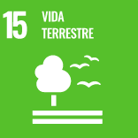
Objetivo 15.
Proteger, recuperar e promover o uso sustentável dos ecossistemas terrestres, gerir de forma
sustentável as florestas, combater a desertificação, deter e reverter a degradação da terra e deter
a perda de biodiversidade
15.1 Até 2020, assegurar a conservação, recuperação e uso sustentável de ecossistemas terrestres e
de água doce interiores e seus serviços, em especial florestas, zonas úmidas, montanhas e terras
áridas, em conformidade com as obrigações decorrentes dos acordos internacionais
15.2 Até 2020, promover a implementação da gestão sustentável de todos os tipos de florestas, deter
o desmatamento, restaurar florestas degradadas e aumentar substancialmente o florestamento e o
reflorestamento globalmente
15.3 Até 2030, combater a desertificação, restaurar a terra e o solo degradado, incluindo terrenos
afetados pela desertificação, secas e inundações, e lutar para alcançar um mundo neutro em termos de
degradação do solo
15.4 Até 2030, assegurar a conservação dos ecossistemas de montanha, incluindo a sua biodiversidade,
para melhorar a sua capacidade de proporcionar benefícios que são essenciais para o desenvolvimento
sustentável
15.5 Tomar medidas urgentes e significativas para reduzir a degradação de habitat naturais, deter a
perda de biodiversidade e, até 2020, proteger e evitar a extinção de espécies ameaçadas
15.6 Garantir uma repartição justa e equitativa dos benefícios derivados da utilização dos recursos
genéticos e promover o acesso adequado aos recursos genéticos
15.7 Tomar medidas urgentes para acabar com a caça ilegal e o tráfico de espécies da flora e fauna
protegidas e abordar tanto a demanda quanto a oferta de produtos ilegais da vida selvagem
15.8 Até 2020, implementar medidas para evitar a introdução e reduzir significativamente o impacto
de espécies exóticas invasoras em ecossistemas terrestres e aquáticos, e controlar ou erradicar as
espécies prioritárias
15.9 Até 2020, integrar os valores dos ecossistemas e da biodiversidade ao planejamento nacional e
local, nos processos de desenvolvimento, nas estratégias de redução da pobreza e nos sistemas de
contas
15.a Mobilizar e aumentar significativamente, a partir de todas as fontes, os recursos financeiros
para a conservação e o uso sustentável da biodiversidade e dos ecossistemas
15.b Mobilizar recursos significativos de todas as fontes e em todos os níveis para financiar o
manejo florestal sustentável e proporcionar incentivos adequados aos países em desenvolvimento para
promover o manejo florestal sustentável, inclusive para a conservação e o reflorestamento
15.c Reforçar o apoio global para os esforços de combate à caça ilegal e ao tráfico de espécies
protegidas, inclusive por meio do aumento da capacidade das comunidades locais para buscar
oportunidades de subsistência sustentável.

Objetivo 16.
Promover sociedades pacíficas e inclusivas para o desenvolvimento sustentável, proporcionar o acesso
à justiça para todos e construir instituições eficazes, responsáveis e inclusivas em todos os
níveis
16.1 Reduzir significativamente todas as formas de violência e as taxas de mortalidade relacionada
em todos os lugares
16.2 Acabar com abuso, exploração, tráfico e todas as formas de violência e tortura contra
crianças
16.3 Promover o Estado de Direito, em nível nacional e internacional, e garantir a igualdade de
acesso à justiça para todos
16.4 Até 2030, reduzir significativamente os fluxos financeiros e de armas ilegais, reforçar a
recuperação e devolução de recursos roubados e combater todas as formas de crime organizado
16.5 Reduzir substancialmente a corrupção e o suborno em todas as suas formas
16.6 Desenvolver instituições eficazes, responsáveis e transparentes em todos os níveis
16.7 Garantir a tomada de decisão responsiva, inclusiva, participativa e representativa em todos os
níveis
16.8 Ampliar e fortalecer a participação dos países em desenvolvimento nas instituições de
governança global
16.9 Até 2030, fornecer identidade legal para todos, incluindo o registro de nascimento
16.10 Assegurar o acesso público à informação e proteger as liberdades fundamentais, em conformidade
com a legislação nacional e os acordos internacionais
16.a Fortalecer as instituições nacionais relevantes, inclusive por meio da cooperação
internacional, para a construção de capacidades em todos os níveis, em particular nos países em
desenvolvimento, para a prevenção da violência e o combate ao terrorismo e ao crime
16.b Promover e fazer cumprir leis e política
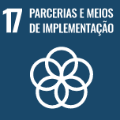
Objetivo 17.
Fortalecer os meios de implementação e revitalizar a parceria global para o desenvolvimento
sustentável
17.1 Fortalecer a mobilização de recursos internos, inclusive por meio do apoio internacional aos
países em desenvolvimento, para melhorar a capacidade nacional para arrecadação de impostos e outras
receitas
17.2 Países desenvolvidos implementarem plenamente os seus compromissos em matéria de assistência
oficial ao desenvolvimento [AOD], inclusive fornecer 0,7% da renda nacional bruta [RNB] em AOD aos
países em desenvolvimento, dos quais 0,15% a 0,20% para os países menos desenvolvidos; provedores de
AOD são encorajados a considerar a definir uma meta para fornecer pelo menos 0,20% da renda nacional
bruta em AOD para os países menos desenvolvidos
17.3 Mobilizar recursos financeiros adicionais para os países em desenvolvimento a partir de
múltiplas fontes
17.4 Ajudar os países em desenvolvimento a alcançar a sustentabilidade da dívida de longo prazo por
meio de políticas coordenadas destinadas a promover o financiamento, a redução e a reestruturação da
dívida, conforme apropriado, e tratar da dívida externa dos países pobres altamente endividados para
reduzir o superendividamento
17.5 Adotar e implementar regimes de promoção de investimentos para os países menos
desenvolvidos
17.6 Melhorar a cooperação Norte-Sul, Sul-Sul e triangular regional e internacional e o acesso à
ciência, tecnologia e inovação, e aumentar o compartilhamento de conhecimentos em termos mutuamente
acordados, inclusive por meio de uma melhor coordenação entre os mecanismos existentes,
particularmente no nível das Nações Unidas, e por meio de um mecanismo de facilitação de tecnologia
global
17.7 Promover o desenvolvimento, a transferência, a disseminação e a difusão de tecnologias
ambientalmente corretas para os países em desenvolvimento, em condições favoráveis, inclusive em
condições concessionais e preferenciais, conforme mutuamente acordado
17.8 Operacionalizar plenamente o Banco de Tecnologia e o mecanismo de capacitação em ciência,
tecnologia e inovação para os países menos desenvolvidos até 2017, e aumentar o uso de tecnologias
de capacitação, em particular das tecnologias de informação e comunicação
17.9 Reforçar o apoio internacional para a implementação eficaz e orientada da capacitação em países
em desenvolvimento, a fim de apoiar os planos nacionais para implementar todos os objetivos de
desenvolvimento sustentável, inclusive por meio da cooperação Norte-Sul, Sul-Sul e triangular
17.10 Promover um sistema multilateral de comércio universal, baseado em regras, aberto, não
discriminatório e equitativo no âmbito da Organização Mundial do Comércio, inclusive por meio da
conclusão das negociações no âmbito de sua Agenda de Desenvolvimento de Doha
17.11 Aumentar significativamente as exportações dos países em desenvolvimento, em particular com o
objetivo de duplicar a participação dos países menos desenvolvidos nas exportações globais até
2020
17.12 Concretizar a implementação oportuna de acesso a mercados livres de cotas e taxas, de forma
duradoura, para todos os países menos desenvolvidos, de acordo com as decisões da OMC, inclusive por
meio de garantias de que as regras de origem preferenciais aplicáveis às importações provenientes de
países menos desenvolvidos sejam transparentes e simples, e contribuam para facilitar o acesso ao
mercado
17.13 Aumentar a estabilidade macroeconômica global, inclusive por meio da coordenação e da
coerência de políticas
17.14 Aumentar a coerência das políticas para o desenvolvimento sustentável
17.15 Respeitar o espaço político e a liderança de cada país para estabelecer e implementar
políticas para a erradicação da pobreza e o desenvolvimento sustentável
17.16 Reforçar a parceria global para o desenvolvimento sustentável, complementada por parcerias
multissetoriais que mobilizem e compartilhem conhecimento, expertise, tecnologia e recursos
financeiros, para apoiar a realização dos objetivos do desenvolvimento sustentável em todos os
países, particularmente nos países em desenvolvimento
17.17 Incentivar e promover parcerias públicas, público-privadas e com a sociedade civil eficazes, a
partir da experiência das estratégias de mobilização de recursos dessas parcerias
17.18 Até 2020, reforçar o apoio à capacitação para os países em desenvolvimento, inclusive para os
países menos desenvolvidos e pequenos Estados insulares em desenvolvimento, para aumentar
significativamente a disponibilidade de dados de alta qualidade, atuais e confiáveis, desagregados
por renda, gênero, idade, raça, etnia, status migratório, deficiência, localização geográfica e
outras características relevantes em contextos nacionais
17.19 Até 2030, valer-se de iniciativas existentes para desenvolver medidas do progresso do
desenvolvimento sustentável que complementem o produto interno bruto [PIB] e apoiem a capacitação
estatística nos países em desenvolvimento.